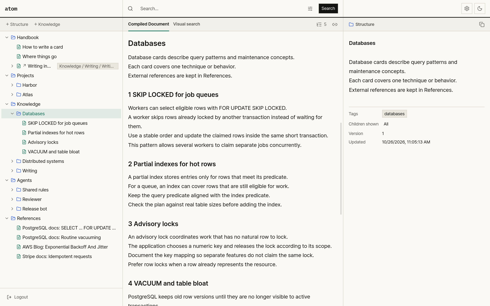
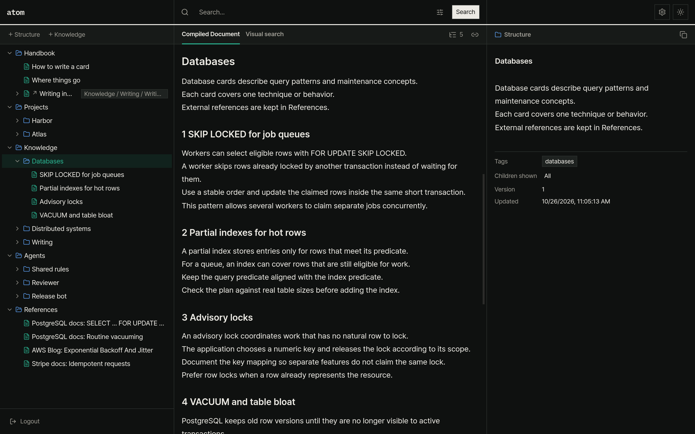

atom은 AI 에이전트가 지식을 트리 구조로 기록하고 읽는 MIT 라이선스 오픈소스 지식 베이스입니다. 각 카드는 50자 이내의 제목과 마크다운 본문, 태그, 다른 카드 참조를 포함하며, 섹션 제목 역할을 하는 구조 카드와 메모를 적는 지식 카드로 구분됩니다. 카드의 내용과 트리 노드의 계층을 분리해 저장하므로 같은 카드를 여러 상위 노드에 연결할 수 있고, 에이전트는 필요한 하위 트리를 마크다운 문서 한 편으로 엮어 읽습니다. 에이전트가 17개 MCP 도구나 REST API로 읽고 수정하는 트리를 사람도 웹 대시보드에서 함께 확인하고 편집합니다.
트리와 문서, 카드 세 칸에서 에이전트가 고친 내용을 확인하는 화면 실시간 변경 반영
대시보드 화면은 왼쪽의 전체 트리, 가운데의 컴파일된 마크다운 문서, 오른쪽의 개별 카드 상세 정보를 함께 보여 줍니다. 서버는 에이전트나 사람이 카드와 트리를 수정할 때마다 SSE(GET /events)로 변경 사항을 알려 열려 있는 화면을 실시간으로 갱신합니다. 사람은 대시보드에서 직접 구조 카드와 지식 카드를 추가하고 편집하며, 설정 창에서 API 키를 발급하고 9개 화면 언어를 선택할 수 있습니다.




카드 한 장을 여러 폴더에 연결해, 한 번 고치면 모든 폴더에 반영되는 바로가기 1 → N 원본 → 위치
카드 한 장을 여러 상위 노드에 연결할 때 원래 노드를 제외한 나머지는 같은 카드를 참조하는 심링크 노드로 생성됩니다. 그림처럼 결제 재시도 카드의 키 보관 시간을 48시간으로 수정하면, 에이전트와 사람은 설계 결정과 운영 인시던트, 레퍼런스 세 폴더에서 모두 바뀐 본문을 확인합니다. 심링크 노드는 서브트리를 컴파일할 때 원래 노드의 하위 항목까지 포함하되 같은 카드가 경로에 반복되면 순환으로 표시하며, 원본 카드가 삭제될 때 함께 삭제됩니다.
하위 트리를 원하는 깊이까지 엮어 에이전트에게 전달하는 마크다운 문서 한 편 1회 도구 호출
서브트리 컴파일은 compile_subtree 도구로 선택한 노드부터 기본 3단계 깊이까지의 하위 항목을 조합해 마크다운 문서를 생성합니다. 트리 계층에 따라 1단계부터 6단계까지 마크다운 제목 단계가 정해지고, 그림의 깊이 버튼을 누르면 사용자가 단계별 구성을 확인할 수 있습니다. 에이전트는 제목과 글자 수만 추린 목차를 먼저 조회한 뒤 필요한 노드만 컴파일하거나, 글자 수 상한과 제외할 노드를 지정해 컨텍스트 창을 아낍니다.
에이전트가 직접 만들고 고치는 카드와 트리, 여러 변경은 batch_op 한 번에 17 도구
에이전트는 같은 컴퓨터의 stdio나 API 키 헤더를 포함한 HTTP 요청으로 MCP 서버에 연결하며, API 키는 읽기와 쓰기 두 범위로 구분되어 읽기 키에는 조회 도구만 제공됩니다. batch_op 도구는 카드 생성과 심링크 연결, 수정, 순서 변경, 삭제를 한 트랜잭션에서 처리하며, 하나라도 실패하면 전체 변경을 되돌립니다. 에이전트는 한 요청 안에서 방금 만든 카드를 상위 노드로 지정해 하위 카드를 이어서 추가합니다.
카드 본문 전체를 대상으로, 범위를 하위 트리 하나로 한정할 수 있는 검색 BM25 순위 방식
에이전트는 search_cards 도구로 제목과 본문을 검색해 관련도 순으로 기본 20건까지 조회하며, 태그나 종류, 수정 시각을 조건으로 지정하고 결과마다 상위 제목 경로를 함께 받습니다. 선택 기능으로 외부 판정 서비스를 연결하면 시스템은 그림처럼 한 번에 후보 카드를 48장까지 질의와 대조해 0에서 1 사이 점수로 평가합니다. 사용자가 OpenAI 키를 등록하면 카드 임베딩으로 비슷한 카드도 찾을 수 있습니다.
처음엔 DB 서버 없이 실행하고, 운영에서는 PostgreSQL로 전환하는 저장소 구성 1 SQLite 파일
사용자는 Node.js 20.19 이상 또는 22.12 이상이 설치된 컴퓨터에서 별도 데이터베이스 서버나 로그인 설정 없이 SQLite 기반으로 서버와 대시보드를 바로 실행합니다. 함께 제공되는 스크립트를 실행하면 합성 데모 데이터가 생성되어 처음 기능을 확인할 때 활용할 수 있습니다. 운영 환경이나 여러 에이전트가 동시에 검색하는 환경에서는 PostgreSQL을 사용하며, 관리자는 대시보드 설정의 데이터베이스 탭에서 연결을 시험하고 기존 SQLite 데이터를 PostgreSQL로 이관할 수 있습니다.